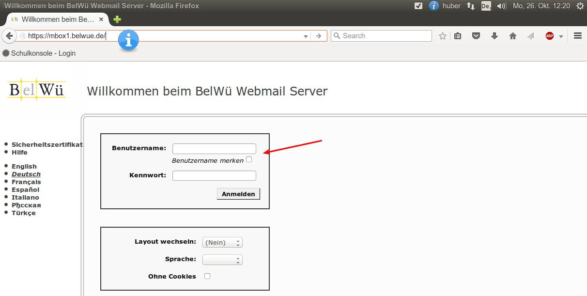

Dienst-Emailadresse¶
Als Lehrer am Copernicus-Gymnasium steht Ihnen eine Dienst-Emailadresse zur Verfügung, die sich nach folgendem Muster richtet: kollege@copernicus-gymnasium.de Wenden Sie sich an den Netzwerkberater, wenn Sie eine solche Emailadresse verwenden möchten.
Verwendung der Email mit einem Browser¶
Sobald Sie ihre Zugangsdaten vom Netzwerkberater erhalten haben, können Sie den Email-Account verwenden. Wenn Sie auf das Emailkonto mit einem Browser zugreifen möchten, geben Sie in der Adresszeile eines beliebigen Browsers folgende URL ein: https://mbox1.belwue.de
Im Feld „Benutzername“ geben Sie bitte die vollständige Emailadresse ein. Im Feld „Kennwort“ geben sie dann das Passwort an, das sie vom Netzwerkberater erhalten haben. Anschließend klicken Sie auf den Button „Anmelden“.
Nach erfolgreicher Anmeldung erscheint eine Übersicht über ihre Emailkonto, wie es von anderen Email-Dienstleisters wie z.B. web.de oder gmx.de kennen (allerdings ohne Werbung).

Auf dieser Seite sehen Sie am linken Rand einen Überblick über die verschiedenen Ordner des Email-Accounts sowie die verschiedenen Bedienungsmöglichkeiten (1.). Den Hauptteil der Seite nimmt eine Liste der empfangenen Emails ein, die zu Beginn der Nutzung des Email-Account naturgemäß leer sein wird. (2.) Unterhalb dieser Übersicht stehen Ihnen diverse Schaltflächen zur Verfügung, die das Arbeiten mit den Mails erleichtern (3.)
Abrufen der Emailadresse in einem Emailprogramm¶
Wenn Sie die Emailadresse in einem Emailprogramm wie zum Beispiel Outlook oder Thunderbird benutzen möchten, dann finden Sie unter der folgenden URL verschiedene Anleitungen, wie Sie die Mailadresse in einem Emailprogramm einrichten können: